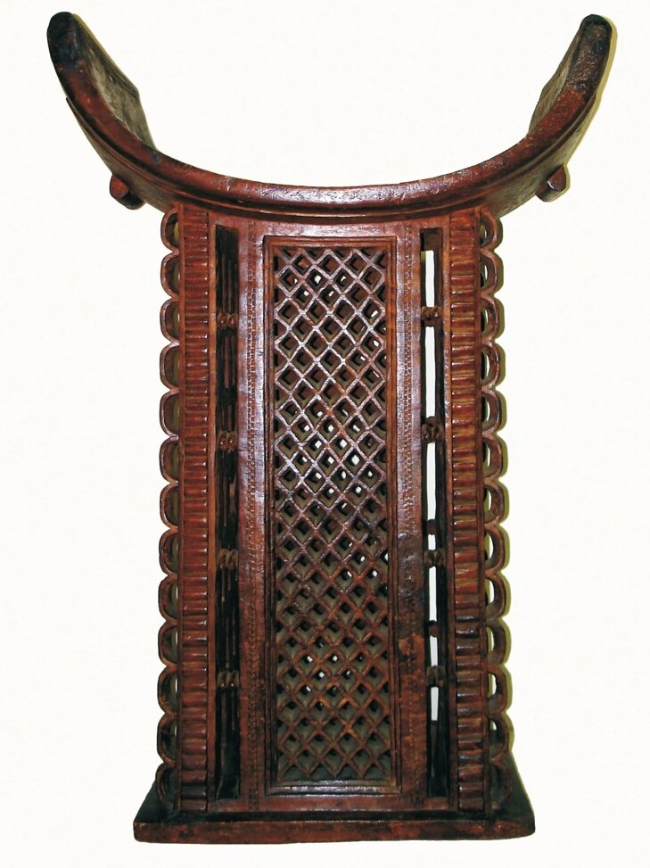

Resgatando o Trono de Daomé
Zinkpo, também chamado Trono de Daomé, era um trono real, proveniente de Daomé, atual Benim. Era um dos principais objetos em exposição no Museu Nacional, no Rio de Janeiro. Infelizmente, o incêndio do Museu Nacional, em 2018, destruiu um extenso acervo da memória nacional. Neste acervo ora destruído encontrava-se o Trono do Daomé que foi oferecido pelo rei Andandozan para o príncipe regente D. João VI como um gesto diplomático. Incorporado ao acervo do Museu Nacional em 1818, o zinkpo tornou-se um símbolo do poder, da soberania e da diplomacia dos reinos africanos. Desse modo, o incêndio de 2018 destruiu patrimônios com significados imensuráveis. Esse projeto se propõe a reunir pesquisadores e o artista plástico Oséias Casanova para reconstruir o Zinkpo do Museu Nacional, de forma que seja possível resgatar uma parte da memória africana no Brasil representada pelo Trono de Daomé.
Nilson Bezerra, Prof. UERJ, Diretor do Museu Vivo do São Bento.